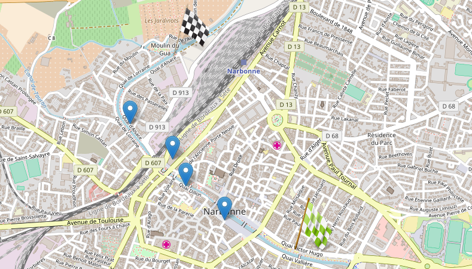

Jeu de piste familial
à la découverte de Narbonne et La Robine
Distance : 3km
Durée : 1h30
Niveau : Moyen
Le parcours
Introduction :
En 1316, une série d’orages gonfla le lit audois qui trouva une autre embouchure dans un nouveau sillon. Il ne resta qu’un mince filet d’eau pour actionner les moulins des tanneurs.
En 1681, Narbonne retrouve l’espoir quand Riquet, ingénieur du Roi Soleil, entreprend les travaux du canal du Midi entre la Méditerranée et l’Atlantique.
Règle du jeu:
Ce jeu de piste invite à découvrir l'histoire et le patrimoine de Narbonne en six étapes.
Chacune d'entre elles vous apportera un élément de votre quête sous la forme de lettres mystères à repositionner dans l'ordre pour répondre à la question finale de la dernière page.